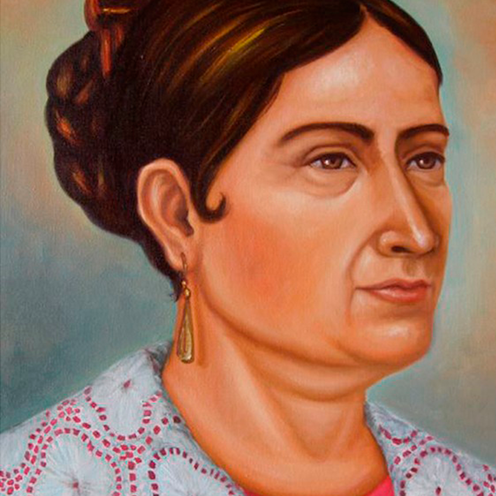
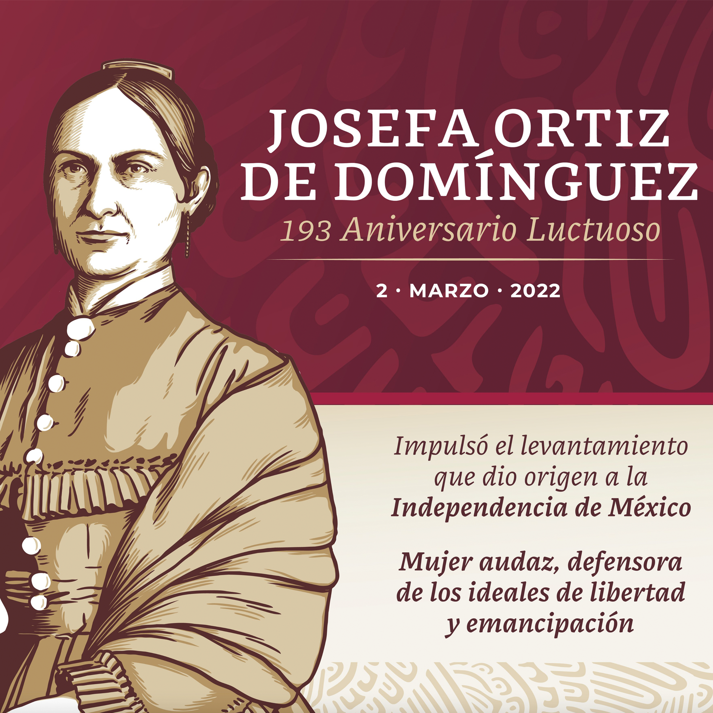

La Corregidora fue una mujer de carácter fuerte y de convicciones firmes, sufrió ataques por sus ideales,
por ser bella, mujer y rebelde. Toda su vida fue una lucha constante sin importarle los riesgos o el
precio que tuviera que pagar, como lo mostró al enfrentar encierros, el poder imperial y el presidencial.

Murió antes que su esposo, el 2 de marzo de 1829 en la Ciudad de México, fue sepultada en el Convento de
Santa Catarina, y después exhumada para trasladarla a la ciudad de Querétaro, junto a su esposo,
Miguel Domínguez.[12] Su legado es actual la lucha por la justicia, la soberanía y la igualdad.